Flow-GRPO: Training Flow Matching Models via Online RL
We propose Flow-GRPO, the first method to integrate online policy gradient reinforcement learning (RL) into flow matching models. Our approach uses two key strategies: (1) an ODE-to-SDE conversion that transforms a deterministic Ordinary Differential Equation (ODE) into an equivalent Stochastic Differential Equation (SDE) that matches the original model’s marginal distribution at all timesteps, enabling statistical sampling for RL exploration; and (2) a Denoising Reduction strategy that reduces training denoising steps while retaining the original number of inference steps, significantly improving sampling efficiency without sacrificing performance. Empirically, Flow-GRPO is effective across multiple text-to-image tasks. For compositional generation, RL-tuned SD3.5-M generates nearly perfect object counts, spatial relations, and fine-grained attributes, increasing GenEval accuracy from to . In visual text rendering, accuracy improves from to , greatly enhancing text generation. Flow-GRPO also achieves substantial gains in human preference alignment. Notably, very little reward hacking occurred, meaning rewards did not increase at the cost of appreciable image quality or diversity degradation.
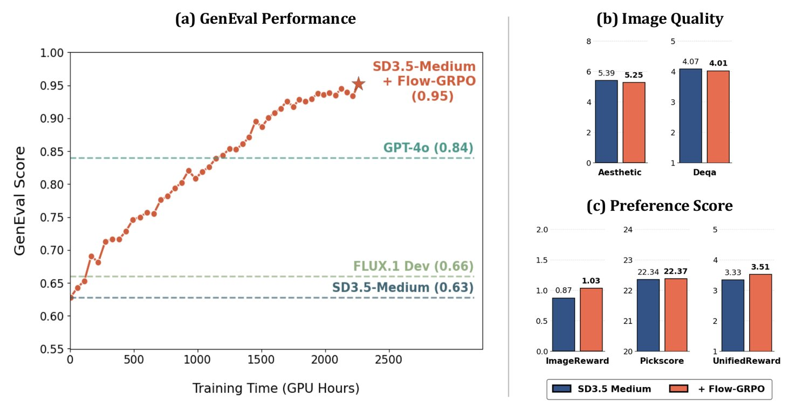
图 1：（a）Flow-GRPO 训练过程中 GenEval 性能稳步上升，并最终超过 GPT-4o。（b）DrawBench [1] 上的图像质量指标基本保持不变。（c）DrawBench 上的人类偏好分数在训练后提升。结果表明，Flow-GRPO 增强了目标能力，同时保持了图像质量，且几乎未出现奖励黑客现象。
Flow matching [2, 3] models have become dominant in image generation [4, 5] due to their solid theoretical foundations and strong performance in producing high quality images. However, they often struggle with composing complex scenes involving multiple objects, attributes, and relationships [6, 7], as well as text rendering [8]. At the same time, online reinforcement learning (RL) [9] has proven highly effective in enhancing the reasoning capabilities of large language models (LLMs) [10, 11]. While previous research has mainly focused on applying RL to early diffusion-based generative models [12] and offline RL techniques like direct preference optimization [13] for flow-based generative models [14, 15], the potential of online RL in advancing flow matching generative models remains largely unexplored. In this study, we explore how online RL can be leveraged to effectively improve flow matching models.
流匹配（flow matching）[2, 3] 模型凭借扎实的理论基础与生成高质量图像的强劲表现，已在图像生成领域占据主导地位 [4, 5]。然而，它们在组合涉及多个物体、属性与关系的复杂场景 [6, 7] 以及文字渲染 [8] 上往往力有不逮。与此同时，在线强化学习（RL）[9] 已被证明在提升大语言模型（LLM）推理能力上极为有效 [10, 11]。尽管以往研究主要聚焦于把 RL 应用于早期的基于扩散的生成模型 [12]，以及把直接偏好优化 [13] 等离线 RL 技术用于基于流的生成模型 [14, 15]，在线 RL 在推进流匹配生成模型上的潜力仍基本未被探索。本文研究如何利用在线 RL 有效改进流匹配模型。
Training flow models with RL presents several critical challenges: (1) Flow models rely on a deterministic generative process based on ODEs [3], meaning they cannot sample stochastically during inference. In contrast, RL relies on stochastic sampling to explore the environment, learning by trying different actions and improving based on rewards. This need for stochasticity in RL conflicts with the deterministic nature of flow matching models. (2) Online RL depends on efficient sampling to collect training data, but flow models typically require many iterative steps to generate each sample, limiting efficiency. This issue is more pronounced with large models [5, 4]. To make RL practical for tasks like image or video generation, improving sampling efficiency is essential.
用 RL 训练流模型面临若干关键挑战：（1）流模型依赖基于常微分方程（ODE）的确定性生成过程 [3]，这意味着它们在推理时无法随机采样。相反，RL 依赖随机采样来探索环境，通过尝试不同动作并依据奖励改进。RL 对随机性的这一需求与流匹配模型的确定性本质相冲突。（2）在线 RL 依赖高效采样来收集训练数据，但流模型通常生成每个样本都要大量迭代步骤，限制了效率；这一问题在大型模型上更为突出 [5, 4]。要让 RL 在图像或视频生成等任务上切实可行，提升采样效率至关重要。
To address these challenges, we propose Flow-GRPO, which integrates GRPO [16] into flow matching models for text-to-image (T2I) generation, using two key strategies. First, we adopt the ODE-to-SDE strategy to overcome the deterministic nature of the original flow model. By converting the ODE-based flow into an equivalent Stochastic Differential Equation (SDE) framework, we introduce randomness while preserving the original marginal distributions. Second, to improve sampling efficiency in online RL, we apply the Denoising Reduction strategy, which reduces denoising steps during training while keeping the full schedule during inference. Our experiments show that using fewer steps maintains performance while significantly reducing data generation costs.
为应对这些挑战，我们提出 Flow-GRPO，它把 GRPO [16] 引入流匹配模型用于文生图（T2I）生成，并采用两项关键策略。第一，我们采用 ODE-to-SDE 策略来克服原始流模型的确定性本质：通过把基于 ODE 的流转换为等价的随机微分方程（SDE）框架，在保留原始边缘分布的同时引入随机性。第二，为提升在线 RL 中的采样效率，我们应用降噪步数缩减（Denoising Reduction）策略，在训练时减少降噪步数，而在推理时保留完整的时间步调度。实验表明，使用更少的步数在保持性能的同时显著降低了数据生成成本。
We evaluate Flow-GRPO on T2I tasks with various reward types. (1) Verifiable rewards, using the GenEval [17] benchmark and visual text rendering task. GenEval includes compositional image generation tasks (e.g., generating specific object counts, colors, and spatial relationships), which can be automatically assessed with object detection methods. Flow-GRPO improves the accuracy of Stable Diffusion 3.5 Medium (SD3.5-M) [4] from 63% to 95% on GenEval, outperforming the state-of-the-art GPT-4o [18] model. For visual text rendering, SD3.5-M’s accuracy increases from 59% to 92%, greatly enhancing its text generation ability. (2) Model-based rewards, such as the human preference Pickscore [19] reward. These results show that our framework is task independent, demonstrating its generalizability and robustness. Importantly, all improvements are achieved with very little reward hacking, as demonstrated in Figure 1.
我们在多种奖励类型的 T2I 任务上评估 Flow-GRPO。（1）可验证奖励，使用 GenEval [17] 基准与视觉文字渲染任务。GenEval 包含组合式图像生成任务（例如生成特定数量的物体、颜色与空间关系），可用目标检测方法自动评估。Flow-GRPO 把 Stable Diffusion 3.5 Medium（SD3.5-M）[4] 在 GenEval 上的准确率从 63% 提升到 95%，超过当前最佳的 GPT-4o [18] 模型。在视觉文字渲染上，SD3.5-M 的准确率从 59% 提升到 92%，大幅增强了其文字生成能力。（2）基于模型的奖励，如人类偏好奖励 Pickscore [19]。这些结果表明我们的框架与任务无关，体现出其通用性与稳健性。重要的是，所有改进都是在极少奖励黑客的情况下取得的，如图 1 所示。
To summarize, the contributions of Flow-GRPO are as follows:
总之，Flow-GRPO 的贡献如下：
We are the first to introduce GRPO to flow matching models by converting deterministic ODE sampling into SDE sampling, showing the effectiveness of online RL for T2I tasks. Flow-GRPO improves SD3.5-M accuracy from 63% to 95% without noticeably compromising image quality.
• 我们首次把 GRPO 引入流匹配模型，通过把确定性 ODE 采样转换为 SDE 采样，展示了在线 RL 在 T2I 任务上的有效性。Flow-GRPO 把 SD3.5-M 的准确率从 63% 提升到 95%，且未明显损害图像质量。
We find that online RL for flow matching models does not require the standard long timesteps for training sample collection. By using fewer denoising steps during training and retaining the original steps during testing, we can significantly accelerate the training process.
• 我们发现，面向流匹配模型的在线 RL 并不需要标准的长时间步来采集训练样本。在训练时使用更少的降噪步数、在测试时保留原始步数，即可显著加速训练过程。
We show that the Kullback-Leibler (KL) constraint effectively prevents reward hacking, where reward increases at the cost of image quality or diversity. KL regularization is not empirically equivalent to early stopping. With a proper KL term, we can match the high reward of the KL-free version while preserving image quality, albeit with longer training.
• 我们证明 Kullback-Leibler（KL）约束能有效防止奖励黑客——即奖励上升却以图像质量或多样性为代价。KL 正则化在实证上并不等价于早停。借助恰当的 KL 项，我们可以在保持图像质量的同时达到无 KL 版本的高奖励，尽管需要更长的训练时间。
Online RL has effectively improved the reasoning abilities of LLMs, such as DeepSeek-R1 [10] and OpenAI-o1 [11], using policy gradient methods like PPO [20] or value-free GRPO [16]. GRPO is more memory efficient by removing the need for a value network, so we adopt it in this work. PPO can also be applied to flow matching in a similar way.
在线 RL 借助 PPO [20] 或无价值网络的 GRPO [16] 等策略梯度方法，有效提升了 LLM 的推理能力，例如 DeepSeek-R1 [10] 与 OpenAI-o1 [11]。GRPO 通过省去价值网络而在显存上更为高效，因此我们在本工作中采用它。PPO 也可以类似地应用于流匹配。
Diffusion models [21, 22, 23] add Gaussian noise to data and train a neural network to reverse the process. Sampling uses discrete DDPM steps or probability flow SDE solvers to generate high-fidelity outputs. Flow matching [2, 3] learns a continuous-time normalizing flow by directly matching the velocity field, allowing efficient deterministic sampling with only a few ODE steps. It achieves competitive FID with far fewer denoising steps than diffusion, making it the dominant choice in recent image [4, 5] and video [24, 25, 26, 27] generation models. Recent work [28, 29] unifies diffusion and flow models under an SDE/ODE framework. Our work builds on their theoretical foundations and introduces GRPO to flow-based models.
扩散模型 [21, 22, 23] 向数据加入高斯噪声，并训练神经网络逆转这一过程；采样时使用离散的 DDPM 步或概率流 SDE 求解器来生成高保真输出。流匹配 [2, 3] 通过直接匹配速度场来学习一个连续时间归一化流，只需少量 ODE 步即可实现高效的确定性采样。它以远少于扩散的降噪步数取得有竞争力的 FID，因而成为近期图像 [4, 5] 与视频 [24, 25, 26, 27] 生成模型的主流选择。近期工作 [28, 29] 在 SDE/ODE 框架下统一了扩散模型与流模型。我们的工作建立在他们的理论基础之上，并把 GRPO 引入基于流的模型。
Recent efforts to align pretrained T2I models with human preferences follow five main directions: (1) direct fine-tuning with differentiable rewards [30, 31, 32, 33]; (2) Reward Weighted Regression (RWR) [34, 35, 36, 37]; (3) Direct Preference Optimization (DPO) and variants [38, 39, 14, 40, 41, 42, 43, 44, 45, 46]; (4) PPO-style policy gradients [47, 48, 49, 50, 51, 52]; (5) training-free alignment methods [53, 54, 55]. These methods have successfully aligned T2I models with human preferences, improving aesthetics and semantic consistency. Building on this progress, we introduce GRPO for flow matching models, the backbone of today’s state-of-the-art T2I systems. Concurrent work [56] applies GRPO to text-to-speech flow models, but instead of converting the ODE to an SDE to inject stochasticity, they reformulate velocity prediction by estimating a Gaussian distribution (predicting both the mean and variance of velocity), which requires retraining the pre-trained model. Another study [57] also explores SDE-based stochasticity but focuses on inference-time scaling.
近期把预训练 T2I 模型与人类偏好对齐的工作主要沿五个方向：（1）用可微奖励做直接微调 [30, 31, 32, 33]；（2）奖励加权回归（RWR）[34, 35, 36, 37]；（3）直接偏好优化（DPO）及其变体 [38, 39, 14, 40, 41, 42, 43, 44, 45, 46]；（4）PPO 式策略梯度 [47, 48, 49, 50, 51, 52]；（5）免训练对齐方法 [53, 54, 55]。这些方法已成功使 T2I 模型与人类偏好对齐，改善了美学与语义一致性。在这一进展之上，我们把 GRPO 引入流匹配模型——当今最佳 T2I 系统的骨干。同期工作 [56] 把 GRPO 应用于文生语音的流模型，但他们并非通过把 ODE 转换为 SDE 来注入随机性，而是通过估计高斯分布（同时预测速度的均值与方差）来重构速度预测，这需要重新训练预训练模型。另一项研究 [57] 也探索了基于 SDE 的随机性，但聚焦于推理时扩展。
In this section, we introduce the mathematical formulation of flow matching and describe how the denoising process can be mapped as a multi-step MDP.
本节介绍流匹配的数学形式，并描述如何把降噪过程映射为一个多步 MDP。
Let be a data sample from the true distribution, and denote a noise sample. Recent advanced image-generation models (e.g., [4, 5]) and video-generation models (e.g., [24, 26, 25, 27]) adopt the Rectified Flow [3] framework, which defines the “noised” data as
设 为来自真实分布的数据样本， 表示噪声样本。近期先进的图像生成模型（如 [4, 5]）与视频生成模型（如 [24, 26, 25, 27]）采用 Rectified Flow [3] 框架，该框架把“加噪”后的数据 定义为
| (1) |
for . Then a transformer model are trained to directly regress the velocity field by minimizing the Flow Matching objective [2, 3]:
对 成立。随后训练一个 transformer 模型，通过最小化流匹配目标 [2, 3] 直接回归速度场 ：
| (2) |
where the target velocity field is .
其中目标速度场为 。
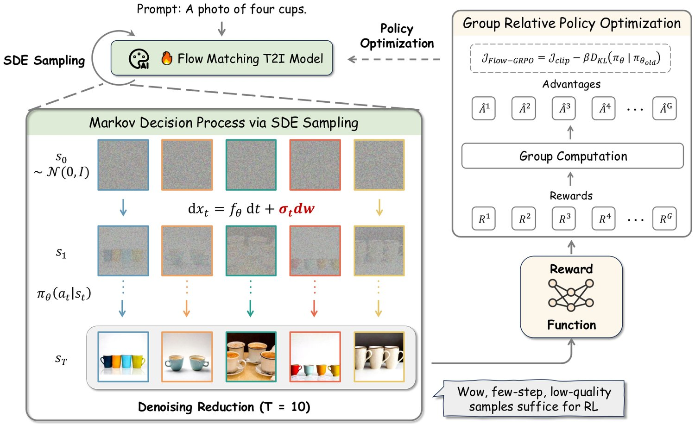
图 2：Flow-GRPO 概览。给定一组提示，我们引入 ODE-to-SDE 策略以实现面向在线 RL 的随机采样；借助降噪步数缩减（仅 T = 10 步），我们高效地采集出质量偏低但仍富含信息的轨迹。来自这些轨迹的奖励输入 GRPO 损失，在线更新模型，得到一个对齐后的策略。
As shown in [12], the iterative denoising process in flow matching models can be formulated as a Markov Decision Process (MDP) . The state at step is , the action is the denoised sample predicted by the model, and the policy is . The transition is deterministic: , and the initial state distribution is , where is the Dirac delta distribution centered at . The reward is only given at the final step: if , and 0 otherwise.
如 [12] 所示，流匹配模型中的迭代降噪过程可表述为一个马尔可夫决策过程（MDP）。第 步的状态为 ，动作是模型预测的降噪样本 ，策略为 。状态转移是确定性的：，初始状态分布为 ，其中 是以 为中心的狄拉克 δ 分布。奖励只在最后一步给出：（若 ），否则为 0。
In this section, we present Flow-GRPO, which enhances flow models using online RL. We begin by revisiting the core idea of GRPO [16] and adapting it to flow matching. We then show how to convert the deterministic ODE sampler into a SDE sampler with the same marginal distribution, introducing the stochasticity needed for applying GRPO. Finally, we introduce Denoise Reduction, a practical sampling strategy that significantly speeds up training without sacrificing performance.
本节介绍 Flow-GRPO，它用在线 RL 增强流模型。我们先回顾 GRPO [16] 的核心思想并将其适配到流匹配，然后说明如何把确定性 ODE 采样器转换为具有相同边缘分布的 SDE 采样器，从而引入应用 GRPO 所需的随机性，最后介绍降噪步数缩减（Denoise Reduction）——一种在不牺牲性能的前提下大幅加速训练的实用采样策略。
RL aims to learn a policy that maximizes the expected cumulative reward. This is often formulated as optimizing a policy with a regularized objective:
RL 旨在学习一个最大化期望累积奖励的策略，这通常表述为优化带正则项的策略 ：
| (3) |
Unlike other policy based methods like PPO [20], GRPO [16] provides a lightweight alternative, which introduces a group relative formulation to estimate the advantage.
与 PPO [20] 等其他基于策略的方法不同，GRPO [16] 提供了一种轻量替代方案，它引入组内相对形式来估计优势。
Recall that the denoising process can be formulated as an MDP, as shown in Section 3. Given a prompt , the flow model samples a group of individual images and the corresponding reverse-time trajectories . Then, the advantage of the -th image is calculated by normalizing the group-level rewards as follows:
回顾第 3 节所述，降噪过程可表述为 MDP。给定提示 ，流模型 采样一组 幅独立的图像 以及相应的逆时轨迹 。随后，第 幅图像的优势通过如下的组级奖励归一化计算得到：
| (4) |
GRPO optimizes the policy model by maximizing the following objective:
GRPO 通过最大化以下目标来优化策略模型：
| (5) |
where
其中
GRPO relies on stochastic sampling in Eq. 4 and Eq. 5 to generate diverse trajectories for advantage estimation and exploration. Diffusion models naturally support this: the forward process adds Gaussian noise step by step, and the reverse process approximates a score-based SDE solver via a Markov chain with decreasing variance. In contrast, flow matching models use a deterministic ODE for the forward process:
GRPO 依赖式 4 与式 5 中的随机采样来生成多样化轨迹，用于优势估计与探索。扩散模型天然支持这一点：前向过程逐步加入高斯噪声，反向过程通过方差递减的马尔可夫链近似基于分数的 SDE 求解器。相比之下，流匹配模型的前向过程使用确定性 ODE：
| (6) |
where is learned via the flow matching objective in Eq. 2. A common sampling method is to discretize this ODE, yielding a one-to-one mapping between successive time steps.
其中 由式 2 中的流匹配目标学得。常见的采样方法是对该 ODE 做离散化，从而在相邻时间步之间得到一一对应的映射。
This deterministic approach fails to meet the GRPO policy update requirements in two key ways: (1) in Eq. 5 requires computing , which becomes computationally expensive under deterministic dynamics due to divergence estimation. (2) More importantly, RL depends on exploration. As shown in Section 5.3, reduced randomness greatly lowers training efficiency. Deterministic sampling, with no randomness beyond the initial seed, is especially problematic.
这种确定性方法在两个关键方面无法满足 GRPO 策略更新的要求：（1）式 5 中的 需要计算 ，而在确定性动力学下由于散度估计，这一计算开销巨大。（2）更重要的是，RL 依赖探索。如第 5.3 节所示，随机性降低会大幅降低训练效率；除了初始种子外没有任何随机性的确定性采样尤其成问题。
To address this limitation, we convert the deterministic Flow-ODE from Eq. 6 into an equivalent SDE that matches the original model’s marginal probability density function at all timesteps. We outline the key process here. A detailed proof is provided in Appendix A. Following [23, 28, 29], we construct a reverse-time SDE formulation that preserves the marginal distribution:
为克服这一局限，我们把式 6 中的确定性 Flow-ODE 转换为一个在所有时间步上与原模型边缘概率密度函数相匹配的等价 SDE。这里概述关键过程，详细证明见附录 A。遵循 [23, 28, 29]，我们构造一个保持边缘分布的逆时 SDE 形式：
| (7) |
where denotes Wiener process increments and control the level of stachasticity during generation. For rectified flow, Eq. 7 is specified as:
其中 表示维纳过程增量， 控制生成过程中的随机性程度。对于 rectified flow，式 7 具体化为：
| (8) |
Applying Euler-Maruyama discretization yields the final update rule:
应用 Euler-Maruyama 离散化得到最终的更新规则：
| (9) |
where injects stochasticity. We use in this paper, where is a scalar hyper-parameter that controls the noise level (See Section 5.3 for its impact on performance).
其中 注入随机性。本文使用 ，其中 是控制噪声水平的标量超参数（其对性能的影响见第 5.3 节）。
Eq. 9 reveals that the policy is an isotropic Gaussian distribution. We can easily compute the KL divergence between and the reference policy in Eq. 5 as a closed form:
式 9 表明策略 是一个各向同性高斯分布。我们可以容易地以闭式计算式 5 中 与参考策略 之间的 KL 散度：
To produce high-quality images, flow models typically require many denoising steps, making data collection costly for online RL. However, we find that large timesteps are unnecessary during online RL training. We can use significantly fewer denoising steps during sample generation, while retaining the original denoising steps during inference to get high-quality samples. Note that we set the timestep as in training, while the inference timestep is set as the original default setting () for SD3.5-M. Our experiments reveals that this approach enables fast training without sacrificing image quality at test time.
为生成高质量图像，流模型通常需要大量降噪步数，这使得在线 RL 的数据采集成本高昂。然而我们发现，在在线 RL 训练期间并不需要大的时间步数：我们可以在样本生成时使用显著更少的降噪步数，而在推理时保留原始降噪步数以获得高质量样本。需要说明的是，我们在训练时把时间步 设为 ，而推理时间步 对 SD3.5-M 保持原始默认设置（）。实验表明，这一做法能够实现快速训练，同时不牺牲测试时的图像质量。
This section empirically evaluates Flow-GRPO’s ability to improve flow matching models on three tasks. (1) Composition Image Generation: This task requires precise object arrangement and attribute control. We report the results on GenEval. (2) Visual Text Rendering: a rule-based task that evaluates the accurate rendering of the text specified in the prompt. (3) Human Preference Alignment: This task aims to align T2I models with human preferences.
本节实证评估 Flow-GRPO 在三项任务上改进流匹配模型的能力。（1）组合式图像生成：该任务要求精确的物体排布与属性控制，我们在 GenEval 上报告结果。（2）视觉文字渲染：一项基于规则的任务，评估提示中所指定文字的准确渲染。（3）人类偏好对齐：该任务旨在使 T2I 模型与人类偏好对齐。
We introduce three tasks, detailing their respective prompts and reward definitions. For hyperparameter details and compute resource specifications, please refer to Appendix B.3 and Appendix B.4.
我们介绍这三项任务，详述各自的提示与奖励定义。超参数细节与计算资源规格见附录 B.3 与 B.4。
GenEval [17] assesses T2I models on complex compositional prompts—like object counting, spatial relations, and attribute binding—across six difficult compositional image generation tasks. We use its official evaluation pipeline, which detects object bounding boxes and colors, then infers their spatial relations. Training prompts are generated using official GenEval scripts, which apply templates and random combinations to construct the prompt dataset. The test set is strictly deduplicated: prompts differing only in object order (e.g., "a photo of A and B" vs. "a photo of B and A") are treated as identical, and these variants are removed from the training set. Based on the base model’s initial accuracy across the six tasks, we set the prompt ratio as . Rewards are rule-based: (1) Counting: ; (2) Position / Color: If the object count is correct, a partial reward is assigned; the remainder is granted when the predicted position or color is also correct.
GenEval [17] 在六个困难的组合式图像生成任务上评估 T2I 模型处理复杂组合提示（如物体计数、空间关系与属性绑定）的能力。我们使用其官方评估流程：检测物体边界框与颜色，再推断它们的空间关系。训练提示由 GenEval 官方脚本生成，通过模板与随机组合构建提示数据集。测试集经过严格去重：仅在物体顺序上有差异的提示（例如“a photo of A and B”与“a photo of B and A”）被视为同一条，这些变体已从训练集中移除。根据基础模型在六个任务上的初始准确率，我们把提示比例设为 。奖励基于规则：（1）计数：；（2）位置／颜色：若物体数量正确，则给予部分奖励；当预测的位置或颜色也正确时，再给予剩余部分。
Text is common in images such as posters, book covers, and memes, so the ability to place accurate and coherent text inside the generated images is crucial for T2I models. In our settings, we define an text rendering task, where each prompt follows the template ‘‘A sign that says ‘‘text’’. Specifically, the placeholder ‘‘text’’ is the exact string that should appear in the image. We use GPT4o to produce 20K training prompts and 1K test prompts. Following [58], we measure text fidelity with the reward where is the minimum edit distance between the rendered text and the target text and is the number of characters inside the quotation marks in the prompt. This reward also serves as our metric of text accuracy.
文字在海报、书封、表情包等图像中十分常见，因此在生成图像中放置准确、连贯的文字对 T2I 模型至关重要。在我们的设定中，我们定义一个文字渲染任务，其中每条提示遵循模板“A sign that says ''text''”。具体地，占位符“text”是应当出现在图像中的确切字符串。我们用 GPT4o 生成 2 万条训练提示与 1 千条测试提示。遵循 [58]，我们用奖励 衡量文字保真度，其中 是渲染出的文字与目标文字之间的最小编辑距离， 是提示中引号内的字符数。该奖励同时用作我们衡量文字准确率的指标。
This task aims to align T2I models with human preferences. We use PickScore [19] as our reward model, which is based on large-scale human annotated pairwise comparisons of images generated from the same prompt. For each image and prompt pair, PickScore provides an overall score that evaluates multiple criteria, such as the alignment of the image with the prompt and its visual quality.
该任务旨在使 T2I 模型与人类偏好对齐。我们使用 PickScore [19] 作为奖励模型，它基于对同一提示所生成图像的大规模人工成对比较。对每个图像—提示对，PickScore 给出一个综合分数，评估多项准则，例如图像与提示的对齐程度及其视觉质量。
Since the T2I model is trained to maximize a predefined reward, it is vulnerable to reward hacking, where the reward increases but image quality or diversity declines. This study aims to make online RL effective for T2I generation without noticeably compromising quality or diversity. To detect reward hacking beyond task-specific accuracy, we evaluate four automatic image quality metrics: Aesthetic Score [59], DeQA [60], ImageReward [32], and UnifiedReward [61] (see Appendix B.1 for details). All metrics are computed on DrawBench [1], a comprehensive benchmark with diverse prompts for T2I models.
由于 T2I 模型被训练为最大化预定义奖励，它容易受到奖励黑客的影响，即奖励上升但图像质量或多样性下降。本研究旨在使在线 RL 在 T2I 生成上有效，同时不显著损害质量或多样性。为检测超出任务特定准确率的奖励黑客，我们评估四项自动图像质量指标：Aesthetic Score [59]、DeQA [60]、ImageReward [32] 与 UnifiedReward [61]（详见附录 B.1）。所有指标均在 DrawBench [1] 上计算，这是一个面向 T2I 模型、提示多样的综合基准。
表 1：GenEval 结果。最佳分数以蓝色标出，次佳以绿色标出。除 SD3.5-M 外其他模型的结果来自 [7] 或其原始论文。Obj.：物体；Attr.：属性。
| Model | Overall | Single Obj. | Two Obj. | Counting | Colors | Position | Attr. Binding |
| Diffusion Models | |||||||
| LDM [62] | 0.37 | 0.92 | 0.29 | 0.23 | 0.70 | 0.02 | 0.05 |
| SD1.5 [62] | 0.43 | 0.97 | 0.38 | 0.35 | 0.76 | 0.04 | 0.06 |
| SD2.1 [62] | 0.50 | 0.98 | 0.51 | 0.44 | 0.85 | 0.07 | 0.17 |
| SD-XL [63] | 0.55 | 0.98 | 0.74 | 0.39 | 0.85 | 0.15 | 0.23 |
| DALLE-2 [64] | 0.52 | 0.94 | 0.66 | 0.49 | 0.77 | 0.10 | 0.19 |
| DALLE-3 [65] | 0.67 | 0.96 | 0.87 | 0.47 | 0.83 | 0.43 | 0.45 |
| Autoregressive Models | |||||||
| Show-o [66] | 0.53 | 0.95 | 0.52 | 0.49 | 0.82 | 0.11 | 0.28 |
| Emu3-Gen [67] | 0.54 | 0.98 | 0.71 | 0.34 | 0.81 | 0.17 | 0.21 |
| JanusFlow [68] | 0.63 | 0.97 | 0.59 | 0.45 | 0.83 | 0.53 | 0.42 |
| Janus-Pro-7B [69] | 0.80 | 0.99 | 0.89 | 0.59 | 0.90 | 0.79 | 0.66 |
| GPT-4o [18] | 0.84 | 0.99 | 0.92 | 0.85 | 0.92 | 0.75 | 0.61 |
| Flow Matching Models | |||||||
| FLUX.1 Dev [5] | 0.66 | 0.98 | 0.81 | 0.74 | 0.79 | 0.22 | 0.45 |
| SD3.5-L [4] | 0.71 | 0.98 | 0.89 | 0.73 | 0.83 | 0.34 | 0.47 |
| SANA-1.5 4.8B [70] | 0.81 | 0.99 | 0.93 | 0.86 | 0.84 | 0.59 | 0.65 |
| SD3.5-M [4] | 0.63 | 0.98 | 0.78 | 0.50 | 0.81 | 0.24 | 0.52 |
| SD3.5-M+Flow-GRPO | 0.95 | 1.00 | 0.99 | 0.95 | 0.92 | 0.99 | 0.86 |
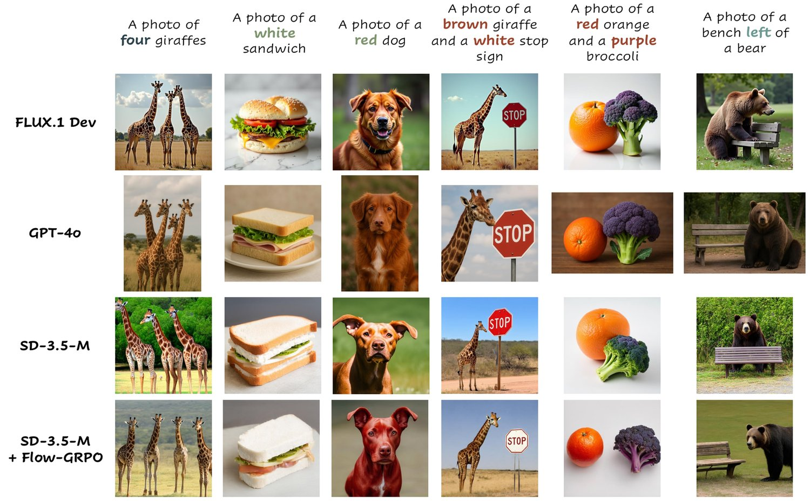
图 3：GenEval 基准上的定性比较。我们的方法在计数、颜色、属性绑定与位置上展现出优越性能。
表 2：组合式图像生成、视觉文字渲染与人类偏好基准上的性能，其中任务性能在测试提示上评估，图像质量与偏好分数在 DrawBench 提示上评估。ImgRwd：ImageReward；UniRwd：UnifiedReward。
| Model | Task Metric | Image Quality | Preference Score | |||||
| GenEval | OCR Acc. | PickScore | Aesthetic | DeQA | ImgRwd | PickScore | UniRwd | |
| SD3.5-M | 0.63 | 0.59 | 21.72 | 5.39 | 4.07 | 0.87 | 22.34 | 3.33 |
| Compositional Image Generation | ||||||||
| Flow-GRPO (w/o KL) | 0.95 | — | — | 4.93 | 2.77 | 0.44 | 21.16 | 2.94 |
| Flow-GRPO (w/ KL) | 0.95 | — | — | 5.25 | 4.01 | 1.03 | 22.37 | 3.51 |
| Visual Text Rendering | ||||||||
| Flow-GRPO (w/o KL) | — | 0.93 | — | 5.13 | 3.66 | 0.58 | 21.79 | 3.15 |
| Flow-GRPO (w/ KL) | — | 0.92 | — | 5.32 | 4.06 | 0.95 | 22.44 | 3.42 |
| Human Preference Alignment | ||||||||
| Flow-GRPO (w/o KL) | — | — | 23.41 | 6.15 | 4.16 | 1.24 | 23.56 | 3.57 |
| Flow-GRPO (w/ KL) | — | — | 23.31 | 5.92 | 4.22 | 1.28 | 23.53 | 3.66 |
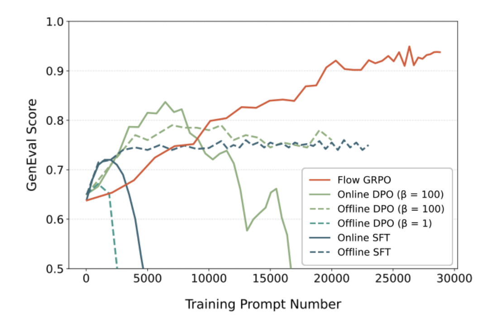
图 4：在组合式生成任务上与其他对齐方法的比较。
图 5：关于不同组大小 的消融研究。更大的组大小表现更好。
Figure 1 and Table 1 show Flow-GRPO’s GenEval performance steadily improving during training, ultimately outperforming GPT-4o. This occurs while maintaining both image quality metrics and preference scores on DrawBench, a benchmark with diverse and comprehensive prompts for evaluating general model capabilities. Figure 3 offers qualitative comparisons. Beyond Compositional Image Generation, Table 2 details evaluations on Visual Text Rendering and Human Preference tasks. Flow-GRPO improved text rendering ability, again without decreasing image quality metrics and preference scores on DrawBench. See Figures 13, 14 & 15 in Appendix C.6 for related qualitative examples. For the Human Preference task, image quality did not decrease without KL regularization. However, we found that omitting KL caused a collapse in visual diversity, a form of reward hacking discussed further in Section 5.3. These results demonstrate that Flow-GRPO boosts desired capabilities while causing very little degradation to image quality or visual diversity.
图 1 与表 1 显示，Flow-GRPO 在 GenEval 上的性能随训练稳步提升，并最终超过 GPT-4o。这一过程中，DrawBench（一个提示多样而全面、用于评估模型通用能力的基准）上的图像质量指标与偏好分数都得以保持。图 3 给出了定性比较。除组合式图像生成外，表 2 详列了在视觉文字渲染与人类偏好任务上的评估：Flow-GRPO 提升了文字渲染能力，同样没有降低 DrawBench 上的图像质量指标与偏好分数。相关定性示例见附录 C.6 中的图 13、14 与 15。在人类偏好任务上，在不使用 KL 正则化时图像质量并未下降；但我们发现，省略 KL 会导致视觉多样性崩溃，这是一种奖励黑客，将在第 5.3 节进一步讨论。这些结果表明，Flow-GRPO 提升了目标能力，同时对图像质量或视觉多样性造成的退化极小。
We compare Flow-GRPO with several alignment methods: supervised fine-tuning (SFT), Flow-DPO [14, 39], and their online variants. Flow-GRPO consistently outperforms all baselines by a significant margin. At each step, we generate a group of images using the same group size as in Flow-GRPO. The only difference lies in the update rule:
我们把 Flow-GRPO 与若干对齐方法比较：监督微调（SFT）、Flow-DPO [14, 39] 及其在线变体。Flow-GRPO 以显著优势一致地优于所有基线。每一步中，我们用与 Flow-GRPO 相同的组大小生成一组图像，唯一差别在于更新规则：
SFT: Select the highest-reward image in each group and fine-tune on it.
• SFT：在每组中选出奖励最高的图像，并在其上微调。
Flow-DPO: Use the highest-reward image in each group as the chosen sample and the lowest as the rejected, then apply the DPO loss.
• Flow-DPO：把每组中奖励最高的图像作为被选中样本、最低的作为被拒绝样本，然后施加 DPO 损失。
Offline variants use a fixed pretrained model for data collection, while online variants update their data collection models every 40 steps. As shown in Figure 5, Flow-GRPO outperforms all baselines. Online DPO also surpasses its offline counterpart, consistent with [15]. For the second-best online DPO, a hyperparameter search on its key parameter revealed that smaller values are not always optimal; excessively small values can cause training collapse. Appendix C presents more comprehensive comparisons covering additional methods and tasks.
离线变体用固定的预训练模型采集数据，而在线变体每 40 步更新其数据采集模型。如图 5 所示，Flow-GRPO 优于所有基线；在线 DPO 也超过其离线对应方法，与 [15] 一致。对于次优的在线 DPO，对其关键参数 的超参数搜索显示，更小的值并不总是最优；过小的 值会导致训练崩溃。附录 C 给出了涵盖更多方法与任务的更全面比较。
This section presents several analyses to better understand the behavior and robustness of Flow-GRPO. We examine issues such as reward hacking, the impact of denoising reduction and noise levels, the effect of group size, and the model’s generalization ability. We provide additional analyses in the Appendix C.
本节给出若干分析，以更好地理解 Flow-GRPO 的行为与稳健性。我们考察奖励黑客、降噪步数缩减与噪声水平的影响、组大小的作用，以及模型的泛化能力。更多分析见附录 C。
We use KL regularization to mitigate reward hacking by tuning the KL coefficient to keep the divergence small and nearly constant during training, keeping the model close to its pretrained weights. This allows task-specific reward optimization without harming overall performance. As shown in Table 2, removing the KL constraint for Compositional Image Generation and Visual Text Rendering significantly reduces image quality and preference scores on DrawBench. In contrast, a properly tuned KL preserves quality while achieving similar gains on task-specific metrics. In the Human Preference Alignment task, removing KL does not affect image quality, likely due to overlap between PickScore and evaluation metrics, but causes a collapse in visual diversity. Outputs converge to a single style, with different seeds producing nearly identical results. KL regularization prevents this collapse and maintains diversity. See Figure 12 in Appendix C.5 for training curves and Figure 6 for more examples.
我们使用 KL 正则化来缓解奖励黑客：通过调节 KL 系数，使训练期间的散度保持很小且近乎恒定，从而让模型贴近其预训练权重。这使得在不损害整体性能的前提下优化任务特定奖励成为可能。如表 2 所示，在组合式图像生成与视觉文字渲染上去掉 KL 约束会显著降低 DrawBench 上的图像质量与偏好分数；相比之下，恰当调节的 KL 在取得相近任务指标增益的同时保持了质量。在人类偏好对齐任务中，去掉 KL 并不影响图像质量，可能是因为 PickScore 与评估指标之间存在重叠，但会导致视觉多样性崩溃：输出收敛到单一风格，不同种子产生几乎相同的结果。KL 正则化阻止了这种崩溃并维持了多样性。训练曲线见附录 C.5 中的图 12，更多示例见图 6。
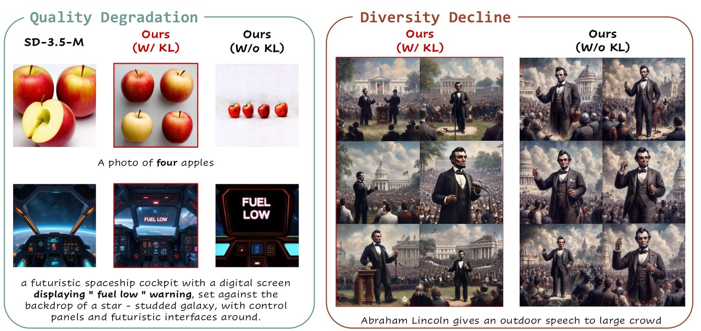
图 6：KL 正则化的效果。KL 惩罚能有效抑制奖励黑客，防止质量退化（对 GenEval 与 OCR）以及多样性下降（对 PickScore）。
Figure 7 (a) highlights Denoising Reduction’s significant impact on accelerating training. To explore how different timesteps affect optimization, these experiments are conducted without the KL constraint. Reducing data collection timesteps from to achieves over a speedup across all three tasks, without impacting final reward. Further reducing to does not consistently improve speed and sometimes slows training, so we choose timesteps for later experiments. For the other two tasks, learning curves of reward versus training time are presented in Figure 9 in the Appendix C.2.
图 7（a）突出了降噪步数缩减在加速训练上的显著作用。为探究不同时间步如何影响优化，这些实验在不加 KL 约束的条件下进行。把数据采集时间步从 减少到 ，在三项任务上都实现了超过 的加速，且不影响最终奖励。进一步减到 并不能持续提升速度，有时反而使训练变慢，因此我们在后续实验中选择 个时间步。另外两项任务的奖励—训练时间学习曲线见附录 C.2 中的图 9。
Higher in the SDE boosts image diversity and exploration, vital for RL training. We control this exploration with a noise level (Eq. 9). Figure 7 (b) shows the impact of on performance. A small (e.g., 0.1) limits exploration and slows reward improvement. Increasing (up to 0.7) boosts exploration and speeds up reward gains. Beyond this point (e.g., from 0.7 to 1.0), further increases provide no additional benefit, as exploration is already sufficient. We also observe that injecting too much noise by further increasing degrades image quality, resulting in zero reward and failed training.
SDE 中更高的 能提升图像多样性与探索，这对 RL 训练至关重要。我们用一个噪声水平 （式 9）来控制这种探索。图 7（b）显示了 对性能的影响：较小的 （如 0.1）会限制探索、减缓奖励提升；增大 （直到 0.7）能增强探索并加快奖励增长；超过这一点（例如从 0.7 到 1.0）再增大则没有额外收益，因为探索已足够充分。我们还观察到，继续增大 注入过多噪声会损害图像质量，导致奖励为零与训练失败。
(a). 降噪步数缩减在 GenEval 上的效果
(b). 噪声水平消融在 OCR 上的效果
图 7：关于关键设计选择的消融研究。（a）降噪步数缩减：更少的降噪步数加速收敛并得到相近性能。（b）噪声水平：中等噪声水平（）使 OCR 准确率最大化，而噪声过少会妨碍探索。
Figure 5 shows the effect of group size using PickScore as the reward function. When the group size was reduced to and , training became unstable and eventually collapsed, whereas remained stable throughout the process. We observe that smaller group sizes produce inaccurate advantage estimates, increasing variance and leading to training collapse, a phenomenon also reported in [71, 72].
图 5 显示了以 PickScore 作为奖励函数时组大小 的影响。当组大小减小到 与 时，训练变得不稳定并最终崩溃，而 在整个过程中保持稳定。我们观察到，更小的组大小会产生不准确的优势估计，增大方差并导致训练崩溃，这一现象在 [71, 72] 中也有报道。
Flow-GRPO demonstrates strong generalization on unseen scenarios from GenEval (Table 4). Specifically, it captures object number, color, and spatial relations, generalizing well to unseen object classes. It also effectively controls object count, generalizing from training on objects to generate or objects. Furthermore, Table 3 shows Flow-GRPO achieves significant gains on T2I-CompBench++ [6, 73]. This comprehensive benchmark for open-world compositional T2I generation features object classes and relationships substantially different from our model’s GenEval-style training data.
Flow-GRPO 在 GenEval 中未见过的场景上展现出很强的泛化能力（表 4）。具体地，它捕捉了物体数量、颜色与空间关系，能很好地泛化到未见过的物体类别；它还能有效控制物体数量，从在 个物体上训练泛化到生成 或 个物体。此外，表 3 显示 Flow-GRPO 在 T2I-CompBench++ [6, 73] 上取得显著增益。这个面向开放世界组合式 T2I 生成的综合基准，其物体类别与关系与我们模型的 GenEval 式训练数据存在显著不同。
表 3：T2I-CompBench++ 结果。该评估使用表 1 中给出的同一模型，该模型在 GenEval 生成的数据集上训练。最佳分数以蓝色标出。
| Model | Color | Shape | Texture | 2D-Spatial | 3D-Spatial | Numeracy | Non-Spatial |
| Janus-Pro-7B [69] | 0.5145 | 0.3323 | 0.4069 | 0.1566 | 0.2753 | 0.4406 | 0.3137 |
| EMU3 [67] | 0.7913 | 0.5846 | 0.7422 | — | — | — | — |
| FLUX.1 Dev [5] | 0.7407 | 0.5718 | 0.6922 | 0.2863 | 0.3866 | 0.6185 | 0.3127 |
| SD3.5-M [4] | 0.7994 | 0.5669 | 0.7338 | 0.2850 | 0.3739 | 0.5927 | 0.3146 |
| SD3.5-M+Flow-GRPO | 0.8379 | 0.6130 | 0.7236 | 0.5447 | 0.4471 | 0.6752 | 0.3195 |
表 4：Flow-GRPO 展现出很强的泛化能力。未见物体：在 60 个物体类别上训练，在 20 个未见类别上评估。未见计数：训练时渲染 2、3 或 4 个物体，在两种设定下评估：渲染 5 或 6 个物体，以及渲染 12 个物体。
| Method | Unseen Objects | Unseen Counting | |||||||
| Overall | Single Obj. | Two Obj. | Counting | Colors | Position | Attr. Binding | 56 Objects | 12 Objects | |
| SD3.5-M | 0.64 | 0.96 | 0.73 | 0.53 | 0.87 | 0.26 | 0.47 | 0.13 | 0.02 |
| SD3.5-M+Flow-GRPO | 0.90 | 1.00 | 0.94 | 0.86 | 0.97 | 0.84 | 0.77 | 0.48 | 0.12 |
We have presented Flow-GRPO, the first method to integrate online policy gradient RL into flow matching models. By converting deterministic ODEs to SDEs and reducing denoising steps during training, Flow-GRPO enables efficient RL-based optimization without noticeably compromising image quality or diversity. Our method significantly improves performance on compositional generation, text rendering, and human preference alignment, with minimal reward hacking. Flow-GRPO offers a simple and general framework for applying online RL to flow-based generative models.
本文提出 Flow-GRPO，这是首个把在线策略梯度 RL 引入流匹配模型的方法。通过把确定性 ODE 转换为 SDE，并在训练时减少降噪步数，Flow-GRPO 实现了高效的基于 RL 的优化，同时不显著损害图像质量与多样性。本方法在组合式生成、文字渲染与人类偏好对齐上显著提升了性能，且几乎没有奖励黑客。Flow-GRPO 为把在线 RL 应用于基于流的生成模型提供了一个简洁而通用的框架。
Although this work focuses on T2I tasks, Flow-GRPO has potential for video generation [25, 27], raising several future directions: (1) Reward Design: Simple heuristics, such as using object detectors or trackers as rule-based rewards, can encourage physical realism and temporal consistency, but more advanced reward models are needed. (2) Balancing Multiple Rewards: Video generation requires optimizing multiple objectives, including realism, smoothness, and coherence. Balancing these competing goals remains challenging and demands careful tuning. (3) Scalability: Video generation is far more resource-intensive than T2I, so applying Flow-GRPO at scale requires more efficient data collection and training pipelines. Additionally, better methods for preventing reward hacking are worth exploring. While KL regularization helps significantly, it requires longer training and occasional reward hacking occurs for certain prompts.
尽管本工作聚焦于 T2I 任务，Flow-GRPO 在视频生成上也具备潜力 [25, 27]，由此引出若干未来方向：（1）奖励设计：简单的启发式方法，如用目标检测器或跟踪器作为基于规则的奖励，可以鼓励物理真实感与时间一致性，但仍需要更先进的奖励模型。（2）多奖励的平衡：视频生成需要同时优化真实性、平滑性与连贯性等多个目标，如何平衡这些相互竞争的目标仍然具有挑战性，需要细致调参。（3）可扩展性：视频生成的资源消耗远高于 T2I，因此大规模应用 Flow-GRPO 需要更高效的数据采集与训练流程。此外，更好的防止奖励黑客的方法也值得探索：尽管 KL 正则化帮助显著，它需要更长的训练时间，且在某些提示上仍会偶尔出现奖励黑客。
This work was partially supported by the JC STEM Lab of AI for Science and Engineering, funded by The Hong Kong Jockey Club Charities Trust, the Research Grants Council of Hong Kong (Project No. CUHK14213224). We gratefully acknowledge Mingwu Zheng for his insightful discussions on the proof and Zhanhui Zhou for his valuable comments that improved the clarity of this paper.
本工作得到由香港赛马会慈善信托基金资助的 JC STEM Lab of AI for Science and Engineering，以及香港研究资助局（项目编号 CUHK14213224）的部分支持。我们诚挚感谢 Mingwu Zheng 在证明方面富有洞见的讨论，以及 Zhanhui Zhou 提出宝贵意见、提升了本文的清晰度。
Our Appendix consists of 4 sections. Readers can click on each section number to navigate to the corresponding section:
我们的附录由 4 节组成，读者可点击各节编号跳转至相应章节：
Section A provides detailed derivations of stochastic sampling in flow matching models.
• A 节给出流匹配模型中随机采样的详细推导。
Section B presents details about our experimental setup.
• B 节介绍实验设置的细节。
Section C offers some additional experimental results, including 1) the comparison with other alignment methods, 2) ablation of denoising reduction on OCR accuracy and pickscore, 3) ablation of initial noise, 4) additional results on FLUX.1-Dev, 5) the learning curves of Flow-GRPO on three tasks, 6) additional qualitative results, and 7) evolution of evaluation images during training.
• C 节提供一些额外的实验结果，包括：1）与其他对齐方法的比较；2）降噪步数缩减在 OCR 准确率与 PickScore 上的消融；3）初始噪声的消融；4）FLUX.1-Dev 上的额外结果；5）Flow-GRPO 在三项任务上的学习曲线；6）额外的定性结果；7）训练过程中评估图像的演化。
Section D provides a visualization of training samples under the denoising reduction strategy.
• D 节给出降噪步数缩减策略下训练样本的可视化。
In addition to this Appendix, we also provide more visualization results, see this website. We encourage the readers to consult this HTML page for a more intuitive assessment of the improvements brought by Flow-GRPO.
除本附录外，我们还提供了更多可视化结果，见该网站。我们建议读者查阅该 HTML 页面，以更直观地评估 Flow-GRPO 带来的改进。
We present a detailed proof here. To compute in Equation 5 during forward sampling, we adapt flow models to a stochastic differential equation (SDE). While flow models normally follow a deterministic ODE:
这里我们给出详细证明。为在前向采样时计算式 5 中的 ，我们把流模型适配为一个随机微分方程（SDE）。流模型通常遵循一个确定性 ODE：
| (10) |
We consider its stochastic counterpart. Inspired by the derivation from SDE to its probability flow ODE in SGMs [23], we aim to construct a forward SDE with specific drift and diffusion coefficients so that its marginal distribution matches that of Eq. 10. We begin with the generic form of SDE:
我们考虑其随机对应形式。受 SGM [23] 中从 SDE 推导其概率流 ODE 的启发，我们旨在构造一个具有特定漂移与扩散系数的前向 SDE，使其边缘分布与式 10 相匹配。我们从 SDE 的一般形式出发：
| (11) |
Its marginal probability density evolves according to the Fokker–Planck equation [74], i.e.,
其边缘概率密度 依据 Fokker–Planck 方程 [74] 演化，即
| (12) |
Similarly, the marginal probability density associated with Eq. 10 evolves:
类似地，式 10 对应的边缘概率密度演化如下：
| (13) |
To ensure that the stochastic process shares the same marginal distribution as the ODE, we impose:
为使该随机过程与 ODE 具有相同的边缘分布，我们施加如下条件：
| (14) |
Observing that
注意到
| (15) | ||||
把式 15 代入式 14，我们得到目标前向 SDE 的漂移系数：
| (16) |
Hence, we can rewrite the forward SDE in Eq. 11 as:
因此，我们可以把式 11 中的前向 SDE 重写为：
| (17) |
where denotes Wiener process increments, and is the diffusion coefficient controlling the level of stochasticity during sampling.
其中 表示维纳过程增量， 是控制采样过程中随机性程度的扩散系数。
The relationship between forward and reverse-time SDEs has been established in [75, 23]. Specifically, if the forward SDE takes the form
前向与逆时 SDE 之间的关系已在 [75, 23] 中建立。具体地，若前向 SDE 形如
| (18) |
then the corresponding reverse-time SDE is
则相应的逆时 SDE 为
| (19) |
Setting , we obtain the reverse-time SDE corresponding to Eq. 17 as
令 ，我们得到式 17 对应的逆时 SDE 为
| (20) |
We thus arrive at the final form of the reverse-time SDE:
由此我们得到逆时 SDE 的最终形式：
| (21) |
Once the score function is available, the process can be simulated directly. For flow matching, this score is implicitly linked to the velocity field .
一旦得到分数函数 ，该过程即可直接模拟。对流匹配而言，这个分数与速度场 有着隐式联系。
Specifically, let . All expectations are over and , where is the data distribution.
具体地，令 。所有期望均对 与 取，其中 是数据分布。
For the linear interpolation , we have:
对于线性插值 ，我们有：
| (22) |
yielding the conditional score:
由此得到条件分数：
| (23) |
The marginal score becomes:
边缘分数变为：
| (24) |
For the velocity field , we derive:
对于速度场 ，我们推导：
| (25) |
Substituting and simplifies Equation 25 to:
把 与 代入，式 25 化简为：
| (26) |
Solving for the score yields:
解出分数得到：
| (27) |
| (28) |
Applying Euler-Maruyama discretization yields the update rule:
应用 Euler-Maruyama 离散化得到更新规则：
| (29) |
where injects stochasticity.
其中 注入随机性。
The details of quality metrics are as follows:
质量指标的细节如下：
Aesthetic score [59]: a CLIP-based linear regressor that predicts an image’s aesthetic score.
• Aesthetic score [59]：一个基于 CLIP 的线性回归器，用于预测图像的美学分数。
DeQA score [60]: a multimodal large language model based image-quality assessment (IQA) model that quantifies how distortions, texture damage, and other low-level artefacts affect perceived quality.
• DeQA score [60]：一个基于多模态大语言模型的图像质量评估（IQA）模型，量化失真、纹理损伤与其他底层伪影对感知质量的影响。
ImageReward [32]: a general purpose T2I human preference reward model that captures text–image alignment, visual fidelity, and harmlessness.
• ImageReward [32]：一个通用的 T2I 人类偏好奖励模型，刻画图文对齐、视觉保真度与无害性。
UnifiedReward [61]: a recently proposed unified reward model for multimodal understanding and generation that currently achieves state-of-the-art performance on the human preference assessment leaderboard.
• UnifiedReward [61]：近期提出的一个面向多模态理解与生成的统一奖励模型，目前在人类偏好评估排行榜上取得最佳性能。
The following table lists the base model and the reward models and their corresponding links.
下表列出基础模型与各奖励模型及其对应链接。
| Models | Links |
| SD3.5-M [4] | https://huggingface.co/stabilityai/stable-diffusion-3.5-medium |
| Aesthetic Score [59] | https://github.com/LAION-AI/aesthetic-predictor |
| PickScore [19] | https://huggingface.co/yuvalkirstain/PickScore_v1 |
| DeQA score [60] | https://huggingface.co/zhiyuanyou/DeQA-Score-Mix3 |
| ImageReward [32] | https://huggingface.co/THUDM/ImageReward |
| UnifiedReward [61] | https://huggingface.co/CodeGoat24/UnifiedReward-7b-v1.5 |
Except for , GRPO hyperparameters are fixed across tasks. We use a sampling timestep and an evaluation timestep . Other settings include a group size , an noise level and an image resolution of 512. The KL ratio is set to 0.04 for GenEval and Text Rendering, and 0.01 for Pickscore. We use Lora with and .
除 外，GRPO 超参数在各任务上保持一致。我们使用采样时间步 与评估时间步 。其他设置包括组大小 、噪声水平 与 512 的图像分辨率。KL 比率 对 GenEval 与文字渲染设为 0.04，对 Pickscore 设为 0.01。我们使用 LoRA，取 与 。
We train our model using 24 NVIDIA A800 GPUs. The learning curves in Appendix C.5 provide details on the specific GPU hours.
我们使用 24 块 NVIDIA A800 GPU 训练模型。附录 C.5 中的学习曲线给出了具体 GPU 小时数的细节。
We compare Flow-GRPO with several alignment methods: supervised fine-tuning (SFT), reward-weighted regression (Flow-RWR [14, 76]), Flow-DPO [14], and their online variants. Flow-GRPO consistently outperforms all baselines by a significant margin. At each step, we generate a group of images using the same group size as in Flow-GRPO. The only difference lies in the update rule:
我们把 Flow-GRPO 与若干对齐方法比较：监督微调（SFT）、奖励加权回归（Flow-RWR [14, 76]）、Flow-DPO [14] 及其在线变体。Flow-GRPO 以显著优势一致地优于所有基线。每一步中，我们用与 Flow-GRPO 相同的组大小生成一组图像，唯一差别在于更新规则：
SFT: Select the highest-reward image in each group and fine-tune on it.
• SFT：在每组中选出奖励最高的图像，并在其上微调。
• Flow-RWR [14, 76]：在每组内对奖励做 softmax，并执行奖励加权的似然最大化。
• Flow-DPO [14, 39]：把每组中奖励最高的图像作为被选中样本、最低的作为被拒绝样本，然后施加 DPO 损失。
Offline variants use a fixed pretrained model for data collection, while online variants update their data collection model every 40 steps. As shown in Figure 8, Flow-GRPO outperforms all other methods. The figure also indicates that DPO and SFT improve over time. In contrast, RWR does not, which aligns with experimental findings on RWR in [12]. Additionally, Online DPO surpasses offline DPO, aligning with [15]’s finding that online DPO performs better. For the second-best online DPO, a hyperparameter search on its key parameter revealed that smaller values are not always optimal; excessively small values can cause training collapse.
离线变体用固定的预训练模型采集数据，而在线变体每 40 步更新其数据采集模型。如图 8 所示，Flow-GRPO 优于所有其他方法。图中还显示，DPO 与 SFT 随时间有所改进，而 RWR 则不然，这与 [12] 中关于 RWR 的实验发现一致。此外，在线 DPO 超过离线 DPO，与 [15] 关于在线 DPO 表现更优的发现相符。对于次优的在线 DPO，对其关键参数 的超参数搜索显示，更小的值并不总是最优；过小的 值会导致训练崩溃。
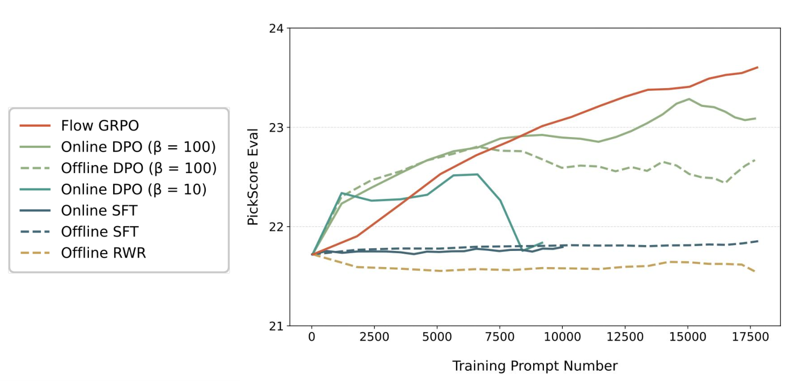
图 8：Flow-GRPO 与其他对齐方法在人类偏好对齐任务上的比较。由于 DPO 等方法使用的批大小与 Flow-GRPO 不同（各自经过调优），我们在 x 轴上使用训练提示的数量，以便在这些方法间做公平比较。
DDPO [12] was originally developed for diffusion-based backbones, so we adapted it to flow-matching models via our ODE-to-SDE conversion. Using SD3.5-M as the base model and PickScore as the reward signal, we track the evaluation reward throughout the entire training process in Figure 8. We find that DDPO’s reward increases more slowly than Flow-GRPO’s and eventually collapses in the later stages, whereas Flow-GRPO trains stably and continues to improve consistently over time.
DDPO [12] 最初面向基于扩散的骨干网络开发，因此我们通过 ODE-to-SDE 转换把它适配到流匹配模型。以 SD3.5-M 为基础模型、PickScore 为奖励信号，我们在图 8 中跟踪整个训练过程中的评估奖励。我们发现，DDPO 的奖励增长比 Flow-GRPO 更慢，并在后期最终崩溃；而 Flow-GRPO 训练稳定，并随时间持续改进。
ReFL [32] directly fine-tunes diffusion models by viewing reward model scores as human preference losses and back-propagating gradients to a randomly-picked late timestep . Following ImageReward [32], we back-propagate gradients to a randomly chosen late timestep during denoising. Figure 8 shows that GRPO surpasses ReFL when the reward is differentiable, indicating that GRPO maintains strong performance in settings where ReFL applies. More importantly, GRPO does not require differentiable rewards, enabling direct use of state-of-the-art Vision-Language Models (VLMs) as reward providers. This offers two key advantages:
ReFL [32] 把奖励模型分数视为人类偏好损失，并把梯度反向传播到一个随机选取的晚期时间步 ，从而直接微调扩散模型。遵循 ImageReward [32]，我们在降噪过程中把梯度反向传播到一个随机选取的晚期时间步 。图 8 显示，在奖励可微时 GRPO 优于 ReFL，表明在 ReFL 适用的设定下 GRPO 仍保持强劲性能。更重要的是，GRPO 不要求奖励可微，从而可以直接使用当前最佳的视觉语言模型（VLM）作为奖励提供方。这带来两项关键优势：
Sophisticated, General-Purpose Rewards: VLMs can conduct human-like evaluations through a structured reasoning process. Given a prompt, a VLM can decompose it into key criteria, reason step by step to verify each aspect in the generated image, and then provide a comprehensive overall score. This enables a single, unified reward model to handle diverse tasks, from text-to-image generation to complex instruction-based image editing.
• 复杂而通用的奖励：VLM 可以通过结构化推理过程进行类人评估。给定一条提示，VLM 能把它分解为若干关键准则，逐步推理以核验生成图像中的各个方面，然后给出综合的总体分数。这使得单一的统一奖励模型能够处理从文生图到复杂的基于指令的图像编辑等多样任务。
Future-Proof and Cost-Free Upgrades: The field of VLMs is advancing at a breathtaking pace. By using a VLM as the reward source, our framework automatically benefits from these improvements. As VLMs become more capable, the reward model becomes stronger without any additional training data or computational cost.
• 面向未来且零成本的升级：VLM 领域正以惊人的速度前进。把 VLM 用作奖励来源，我们的框架会自动从这些进步中获益。随着 VLM 能力增强，奖励模型也随之变强，而无需任何额外的训练数据或计算成本。
ORW [35] is an online reward-weighted regression method that guides the model to prioritize high-reward regions. Unlike KL regularization, it employs Wasserstein-2 regularization to prevent policy collapse and maintain diversity. To ensure a fair comparison, we adopt the same experimental setup as in our Human Preference Alignment task. For ORW, we set and (lower values led to unstable training). The steps_per_epoch parameter, which controls how frequently the data-collecting policy is updated, was chosen from based on best performance. Table 5 reports reward scores on the test set across training steps. Following ORW’s Table 1, we randomly sampled 50 DrawBench prompts and generated 64 images per prompt to compute CLIP and Diversity scores. As shown in Table 6, Flow-GRPO outperforms ORW on both metrics.
ORW [35] 是一种在线奖励加权回归方法，引导模型优先关注高奖励区域。与 KL 正则化不同，它采用 Wasserstein-2 正则化来防止策略崩溃并维持多样性。为保证公平比较，我们采用与人类偏好对齐任务相同的实验设置。对 ORW，我们设 与 （更低的取值会导致训练不稳定）。控制数据采集策略更新频率的 steps_per_epoch 参数依据最佳性能从 中选取。表 5 报告了各训练步上测试集的奖励分数。遵循 ORW 的表 1，我们随机采样 50 条 DrawBench 提示，每条提示生成 64 幅图像，以计算 CLIP 分数与多样性分数。如表 6 所示，Flow-GRPO 在两项指标上都优于 ORW。
表 5：各训练步上测试集的奖励分数。
| Method | Step 0 | Step 240 | Step 480 | Step 720 | Step 960 |
| SD3.5-M + ORW | 28.79 | 29.05 | 29.15 | 27.58 | 23.05 |
| SD3.5-M + Flow-GRPO | 28.79 | 29.10 | 29.17 | 29.51 | 29.89 |
表 6：不同微调方法下 CLIP 分数与多样性分数的比较。
| Method | CLIP Score | Diversity Score |
| SD3.5-M | 27.99 | 0.96 |
| SD3.5-M + ORW | 28.40 | 0.97 |
| SD3.5-M + Flow-GRPO | 30.18 | 1.02 |
We show the extended Denoising Reduction ablations of Visual Text Rendering and Human Preference Alignment tasks in Figure 9.
我们在图 9 中给出视觉文字渲染与人类偏好对齐任务上扩展的降噪步数缩减消融。
(a) 视觉文字渲染
(b) 人类偏好对齐
图 9：降噪步数缩减的效果
We initialize each rollout with difference random noise to increase exploratory diversity during RL training. We perform an additioanl ablation to confirm this claim. With SD3.5-M as the base model and PickScore as the reward, we compare Flow-GRPO with different initial noise against Flow-GRPO with the same initial noise. Figure 11 shows the variant with different noise consistently achieved high rewards during the training process.
我们用不同的随机噪声初始化每次 rollout，以提升 RL 训练中的探索多样性。我们做了一项额外消融来证实这一判断。以 SD3.5-M 为基础模型、PickScore 为奖励，我们把使用不同初始噪声的 Flow-GRPO 与使用相同初始噪声的 Flow-GRPO 做比较。图 11 显示，使用不同噪声的变体在训练过程中持续取得更高的奖励。
图 10：初始噪声的影响
图 11：FLUX.1-Dev 上的额外结果
We run Flow-GRPO on FLUX.1-Dev [5] using PickScore as the reward signal. The reward curve rises steadily throughout training without noticeable reward hacking. Figure 11 shows the reward values over the training process, and Table 7 compares FLUX.1-Dev with FLUX.1-Dev + Flow-GRPO on DrawBench.
我们在 FLUX.1-Dev [5] 上运行 Flow-GRPO，使用 PickScore 作为奖励信号。奖励曲线在整个训练过程中稳步上升，没有明显的奖励黑客。图 11 显示了训练过程中的奖励值，表 7 比较了 FLUX.1-Dev 与 FLUX.1-Dev + Flow-GRPO 在 DrawBench 上的表现。
表 7：FLUX.1-Dev 与 Flow-GRPO 微调模型的比较。
| Model | Aesthetic | DeQA | ImageReward | PickScore | UnifiedReward |
| FLUX.1-Dev | 5.71 | 4.31 | 0.85 | 22.62 | 3.65 |
| FLUX.1-Dev + Flow-GRPO | 6.02 | 4.24 | 1.32 | 23.97 | 3.81 |
Figure 12 shows learning curves for three tasks, with and without KL. These results emphasize that KL regularization is not empirically equivalent to early stopping. Adding appropriate KL can achieve the same high reward as the KL-free version and maintain image quality, though it requires longer training.
图 12 给出了三项任务在有无 KL 时的学习曲线。这些结果强调，KL 正则化在实证上并不等价于早停：加入恰当的 KL 可以达到与无 KL 版本相同的高奖励并保持图像质量，尽管需要更长的训练时间。
(a) 组合式图像生成
(b) 视觉文字渲染
(c) 人类偏好对齐
图 12：有无 KL 时的学习曲线。KL 惩罚在早期减缓训练，却能有效抑制奖励黑客。
Figures 13, 14 & 15 qualitatively compare SD3.5-M with its Flow-GRPO enhanced versions (with and without KL regularization) using GenEval, OCR and PickScore rewards, respectively. Flow-GRPO with KL regularization improves the target capability while maintaining image quality and minimizing reward-hacking. Conversely, removing the KL constraint significantly degrades image quality and diversity.
图 13、14 与 15 分别用 GenEval、OCR 与 PickScore 奖励，定性比较了 SD3.5-M 与其经 Flow-GRPO 增强的版本（有无 KL 正则化）。带 KL 正则化的 Flow-GRPO 在保持图像质量、最小化奖励黑客的同时提升了目标能力；相反，去掉 KL 约束会显著损害图像质量与多样性。
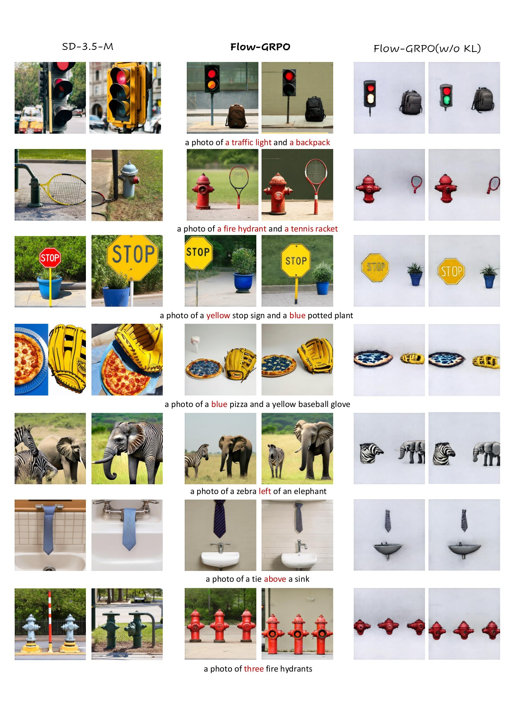
图 13：SD3.5-M 与用 GenEval 奖励训练的 SD3.5-M + Flow-GRPO 之间的额外定性比较。
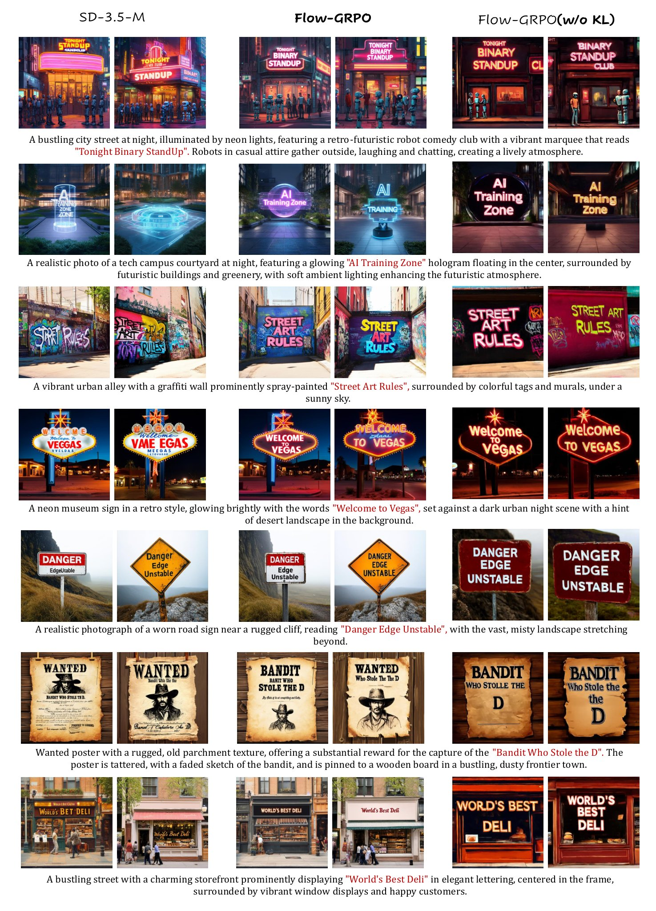
图 14：SD3.5-M 与用 OCR 奖励训练的 SD3.5-M + Flow-GRPO 之间的额外定性比较。
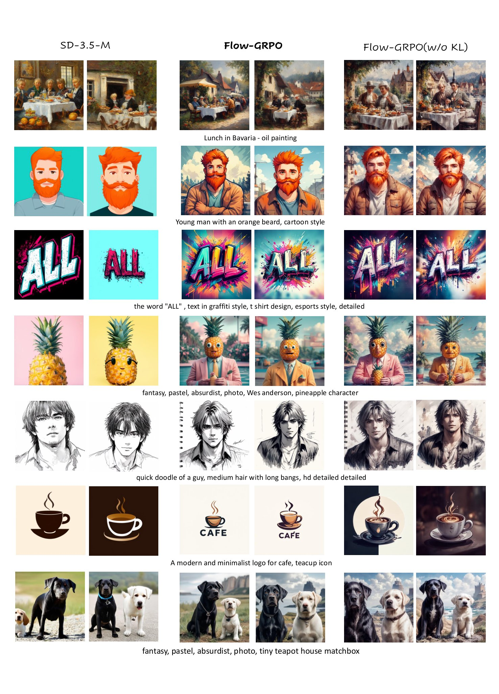
图 15：SD3.5-M 与用 PickScore 奖励训练的 SD3.5-M + Flow-GRPO 之间的额外定性比较。
To better understand the training dynamics of our proposed Flow-GRPO framework, we visualize the evolution of generated samples corresponding to fixed evaluation prompts at regular intervals during training in Figure 16, 17 & 18. For consistency, all visualizations are produced using a 40-step ODE-based sampling schedule. These qualitative results provide a visual representation of how the model progressively improves its generation quality and alignment with task objectives over time.
为更好地理解我们所提 Flow-GRPO 框架的训练动态，我们在图 16、17 与 18 中可视化了训练期间按固定间隔、对应固定评估提示所生成样本的演化。为保持一致，所有可视化都使用 40 步基于 ODE 的采样调度生成。这些定性结果直观呈现了模型如何随时间逐步提升生成质量以及与任务目标的对齐程度。
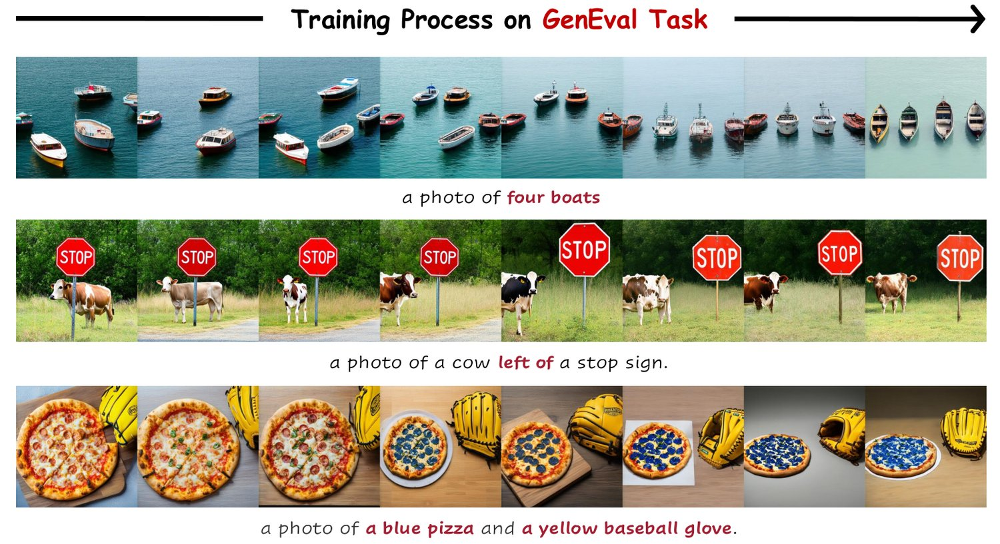
图 16：我们可视化了在 GenEval 任务上优化 SD3.5-Medium 期间、连续训练迭代中生成的样本。
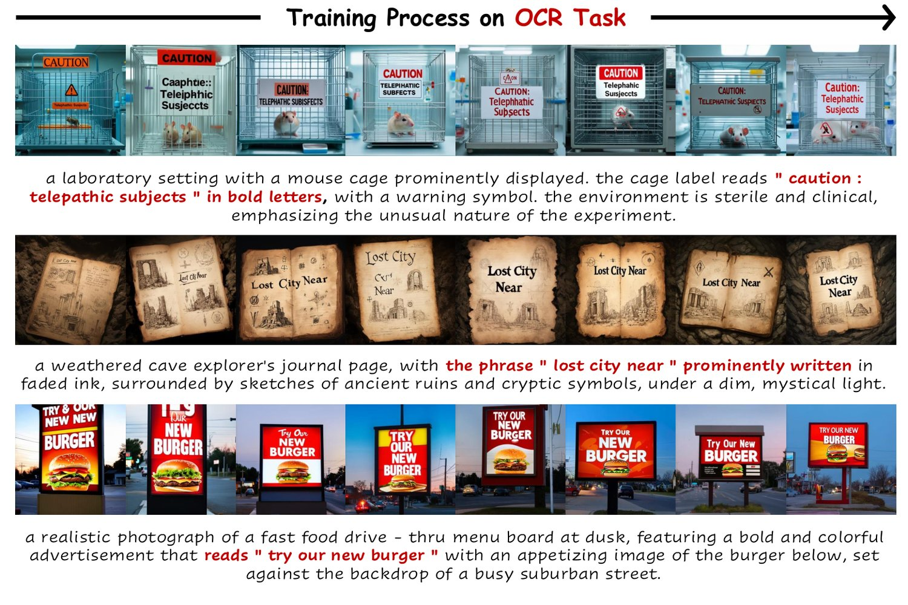
图 17：我们可视化了在 OCR 任务上优化 SD3.5-Medium 期间、连续训练迭代中生成的样本。
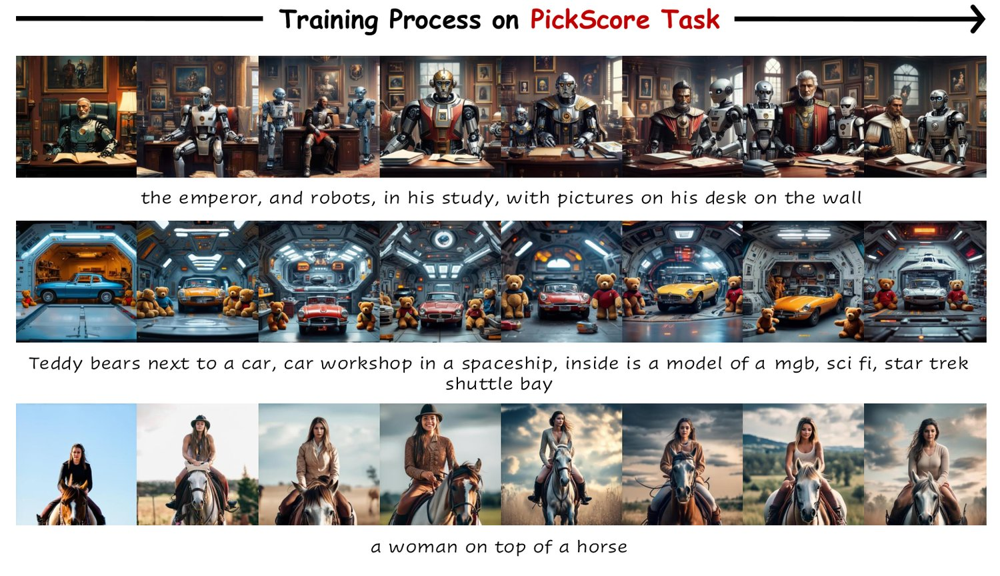
图 18：我们可视化了在 PickScore 任务上优化 SD3.5-Medium 期间、连续训练迭代中生成的样本。
In this section, we compare images obtained with SDE sampling at various steps against those produced by ODE sampling, and offer an intuitive view of the denoising reduction strategy. Figure 19 presents SD3.5-Medium samples under four inference settings: (a) ODE sampling with 40 steps; (b) SDE sampling with 40 steps; (c) SDE sampling with 10 steps; (d) SDE sampling with 5 steps.
本节我们把不同步数下 SDE 采样得到的图像与 ODE 采样产生的图像做比较，并给出降噪步数缩减策略的直观视图。图 19 呈现了 SD3.5-Medium 在四种推理设置下的样本：（a）40 步 ODE 采样；（b）40 步 SDE 采样；（c）10 步 SDE 采样；（d）5 步 SDE 采样。
The 40-step ODE and SDE runs yield visually indistinguishable images, confirming that our SDE sampler preserves quality. Shortening the SDE schedule to 10 and 5 steps introduces conspicuous artifacts, like color drift and fine details blur. Contrary to expectation that such low-quality samples might hinder optimization. it actually do just the opposite and accelerate optimization. Because Flow-GRPO relies on relative preferences, it still extracts a useful reward signal, while the shorter trajectories signifactly cut wall-clock time. Consequently, Flow-GRPO with denoising reduction strategy converges more quickly on both layout-oriented benchmarks such as GenEval and quality-focused metrics such as PickScore, without sacrificing final performance.
40 步的 ODE 与 SDE 采样产生的图像在视觉上无法区分，证实我们的 SDE 采样器保持了质量。把 SDE 调度缩短到 10 步与 5 步会引入明显的伪影，如颜色漂移与细节模糊。与「这类低质量样本可能妨碍优化」的预期相反，它们的效果恰恰相反，反而加速了优化：由于 Flow-GRPO 依赖相对偏好，它仍能提取出有用的奖励信号，而更短的轨迹显著削减了实际耗时。因此，采用降噪步数缩减策略的 Flow-GRPO 在 GenEval 等布局导向的基准与 PickScore 等质量导向的指标上都收敛得更快，且不牺牲最终性能。
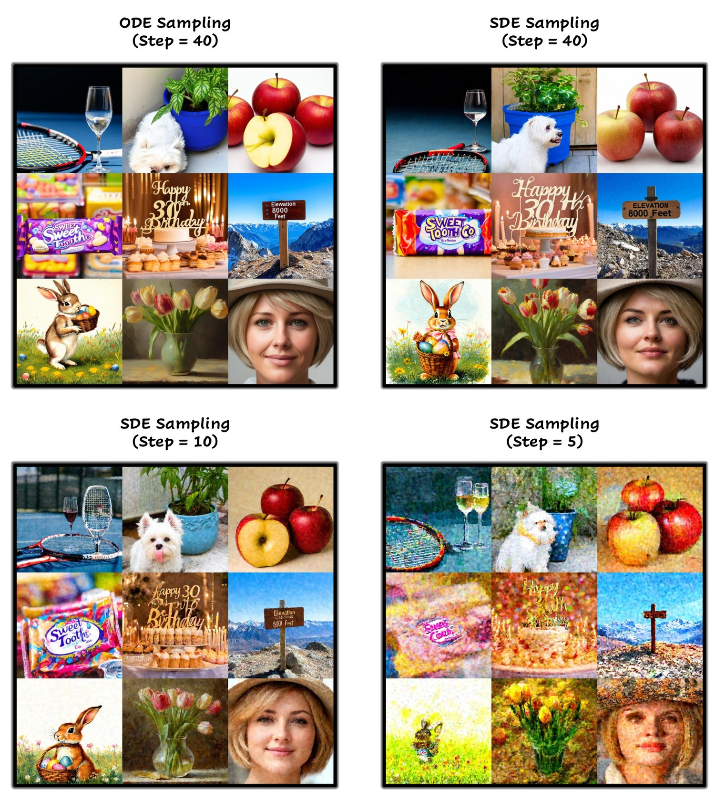
图 19：不同推理设置下训练样本的可视化。